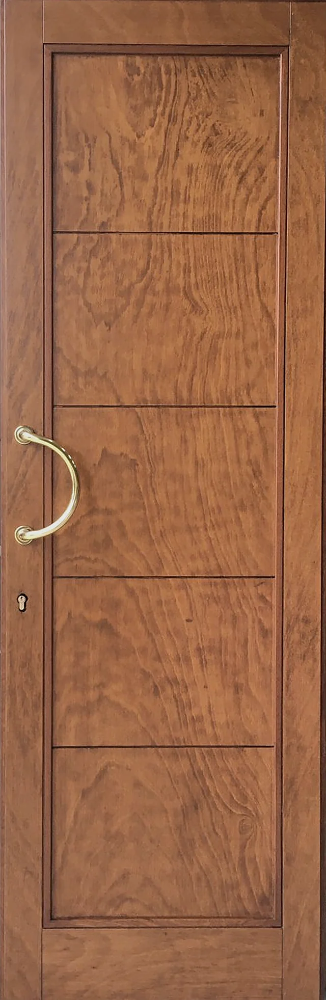
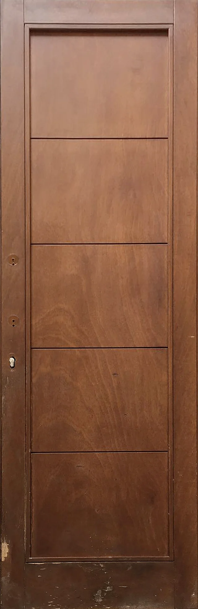
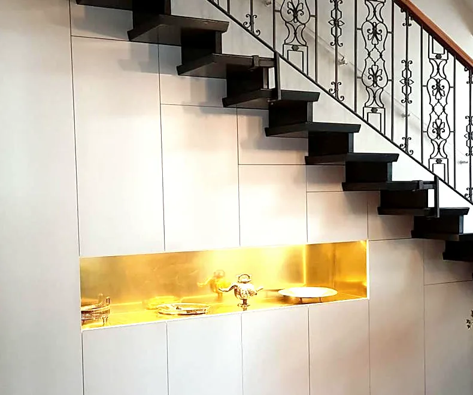
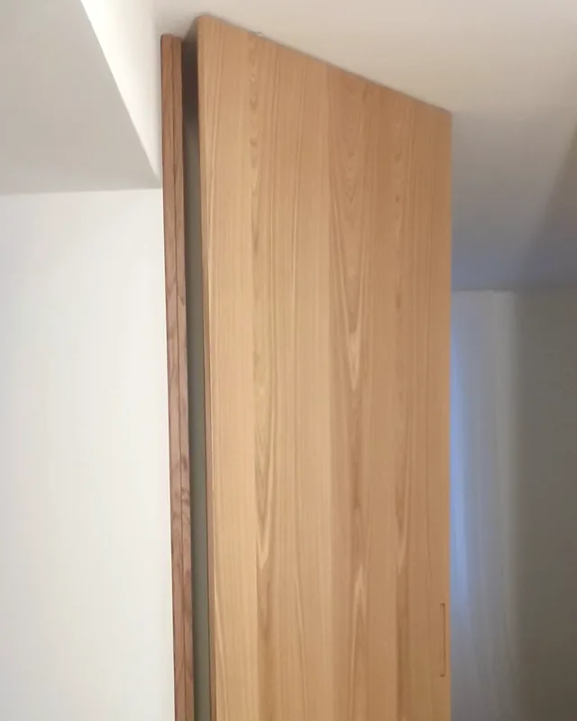
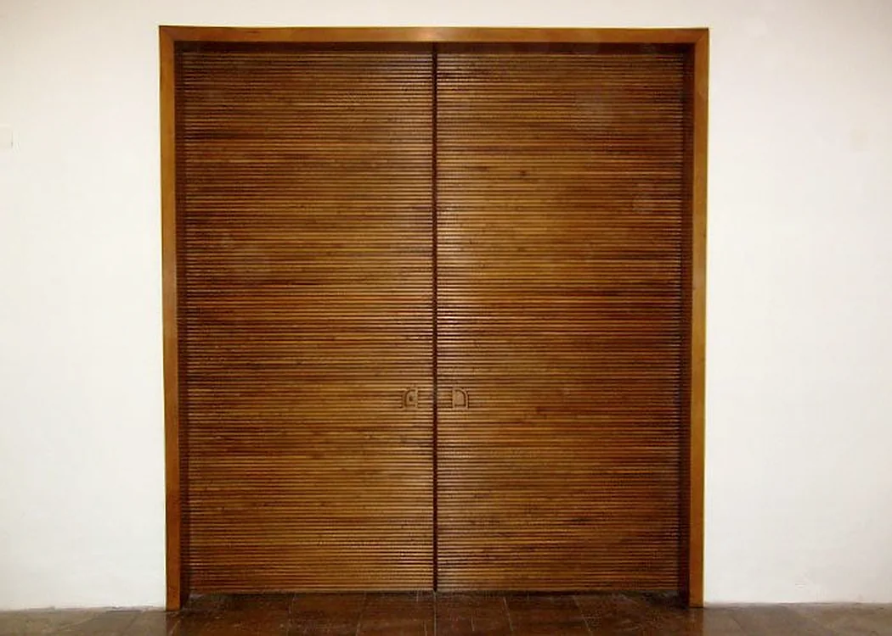
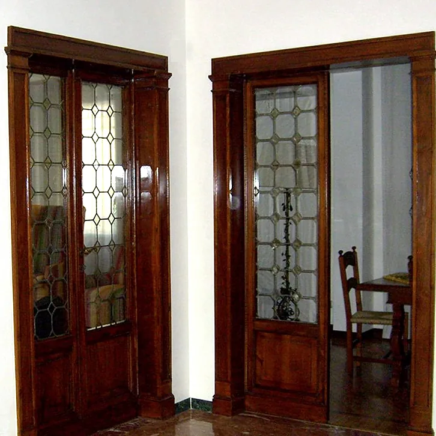

L’arte di lavorare il legno come nel passato
Arredi su misura, serramenti e restauro. Due falegnami e una bottega a Mestrino, Padova.
Restauro di un portone d’ingresso
Portato a legno grezzo, tre mani di vernice all’acqua, ferramenta nuova.


Su misura, in stile o moderni
Interpretiamo i disegni degli architetti o semplici schizzi, oppure progettiamo da zero. Costruiamo in laboratorio e la posa la curiamo noi, senza personale esterno.

Arredo su misura
Un sottoscala a otto ante con apertura a push e una nicchia centrale in ottone, con la luce a led.

Serramenti e porte
Porte interne a bilico, classiche, moderne e scorrevoli. Finestre, balconi e portoncini.

Legno vecchio, della stessa essenza
Restauriamo mobili antichi di qualsiasi epoca. Il lavoro può comprendere il trattamento antitarlo e la verniciatura a gommalacca che si usava un tempo, resina sciolta in alcool. Usiamo legno vecchio della stessa essenza del mobile da restaurare.
Palazzo del Bo, Padova
Nella sede dell’Università abbiamo restaurato mobili, oggetti, porte scorrevoli e pareti divisorie che portano la firma di Gio Ponti.
Le finiture
Vernice all’acqua, laccatura e gommalacca.
Vi aspettiamo nella nostra bottega
Mauro Nosarini e Giuliano Saibene hanno cominciato da ragazzini in una nota falegnameria artigiana di Padova. Oggi disegnano, costruiscono e verniciano nel loro laboratorio di Mestrino.
- 049 900 4916
- Mauro 347 764 1720
- Giuliano 347 410 9263
- info@bottegadellartesnc.it
- Via Levico 18, 35035 Mestrino (PD), apri la mappa
